BLE Debugger User Guide
Version 0.2.0 · screenshots taken on an Android phone (HBuilderX standard base)
1. What it is
BLE Debugger is a Bluetooth Low Energy tool for hardware engineers that aims to be "Postman for BLE":
- Connect and talk: scan, connect, service tree, HEX/ASCII send and receive, Notify, READ, MTU, RSSI, several devices at once.
- Commands as assets: every operation has an action, payload, expected response and assertions; one tap runs it and judges PASS / FAIL / timeout.
- Protocol Collections: services, characteristics, operations, variables and examples live in a collection decoupled from the device instance. Collections match devices by service fingerprint, can be imported, exported, shared with a team, or filled in by an AI and imported back.
- Payload templates:
{{len}},{{sum}},{{crc16}},{{seq}},{{variable}}make real protocols with lengths, checksums and sequence numbers runnable. - Typed fields: field tables use real types; RX/TX logs show
field=value; assertions compare decoded fields. - Mock mode: a built-in demo device plus mock devices generated from collections; the whole flow works without hardware.
- Debug Pack: one export produces protocol docs, session record, AI prompt, mock seed and the collection file.
2. Quick start
2.1 Run
- HBuilderX: import the project, connect a device, "Run → Run to phone or emulator".
- CLI (
cli.exeshipped with HBuilderX 5.x):
cli launch app-android --project <absolute project path> --deviceId <adb serial> --playground standardAllow the Bluetooth and location permissions on first launch.
2.2 No hardware? Use the demo device
The empty scan list offers "No hardware? Connect demo device". It turns on mock mode and lists BLE Demo Device, which matches the built-in protocol templates: commands are answered, events are pushed periodically, battery drains. Every flow in this guide can be walked through with it.
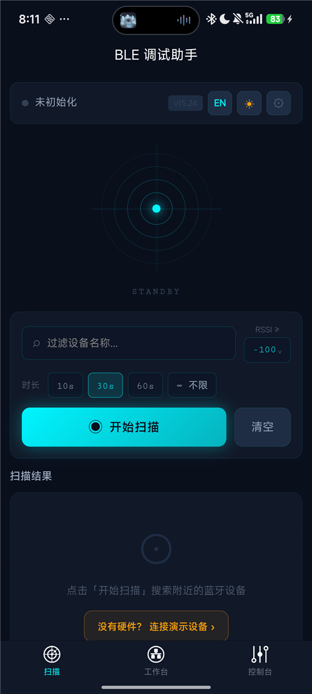

2.3 Ten-minute tour
- Scan, connect, land on the Console.
- Open the "Commands" tab and tap ▶ on a built-in template command; watch PASS / FAIL.
- Tap "+" to create a command whose payload uses
{{sum}}; save and run it. - Long-press the command and "Save last run as example"; the example goes into the collection.
- On Workspace tap "Export Debug Pack" and hand the zip to a teammate or an AI.
- In "Collections & Plugins" import the collection.json / zip that comes back.
3. Layout
Three bottom tabs:
| Tab | Purpose |
|---|---|
| Scan | discover, filter, connect, recent devices, mock mode entry |
| Workspace | connected devices: RSSI, MTU, service tree with annotations, collection chip, Debug Pack export |
| Console | live traffic: command panel + log + send area + protocol parser + heartbeat |
From Workspace you reach Collections & Plugins, Collection detail and Transfer History.
Wide screens (tablets, landscape, ≥768px) switch to a multi-column layout with a fixed left sidebar.
4. Scan and connect
- Filter by name substring and minimum RSSI; duration 10s / 30s / 60s / unlimited.
- Device card: signal bars, device ID, advertised service UUID chips, connectable / connected / MOCK badges, PIN button.
- PIN: store a PIN per device and optionally write it to a characteristic right after connecting.
- Recent devices: one-tap reconnect; 🕓 opens transfer history.
- Multi-device: scanning continues while connected; the console has a device tab bar.
A successful connection lands on the Console.
5. Console
5.1 Communication log
- Direction (TX / RX / SYS), time, endpoint, byte count; HEX / ASCII / DUAL; auto-scroll toggle; ♥ filter when heartbeat entries exist.
- Decoded chips: when the operation has a response field table, or the characteristic is documented in a built-in template / collection, RX is decoded into
field=value; TX is decoded with the request field table. - Long-press TX: save as protocol sample, save as paired example (auto-matches the response within 2 s), create a command from it. Long-press RX saves a sample.

5.2 Send area
- HEX mode filters invalid characters; ASCII sends as-is.
- Templates: the input accepts
{{len}}{{sum}}{{variable}}; the ƒ button inserts tokens; the rendered bytes are previewed live and errors disable sending. - Quick command chips fill the input; "+" saves the current input as a quick command.
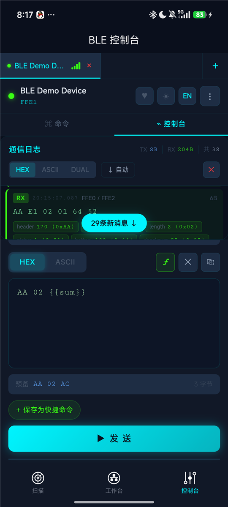
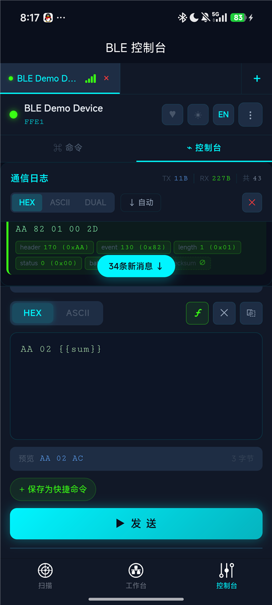
5.3 More
- Header: NOTIFY toggle, ♥ heartbeat test, theme / language.
- ⋮ menu: read characteristic, value history (diff), clear log, settings, disconnect.
- Protocol analysis: RAW / UART / custom JS plugin on the latest RX.
6. Command collection
The "Commands" tab is a Postman-style panel grouped by service → characteristic → operation, showing action, payload, rendered template, description, the last 10 results and RTT.

6.1 Where commands come from
- Built-in templates: matched by service UUID (Generic Command, Nordic UART, Standard GATT), listed with a "Template" badge and a default expected response.
- Your own: "+" in the toolbar or on a characteristic row; import from quick commands; create from a log entry.
- Collections: commands are stored in the collection, so a second unit of the same product or another phone that imports the collection gets them too.
6.2 Operation editor
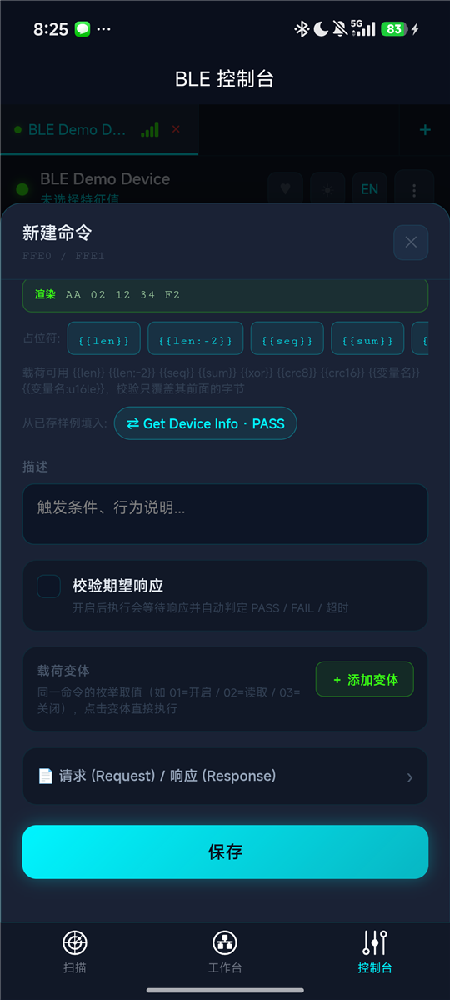
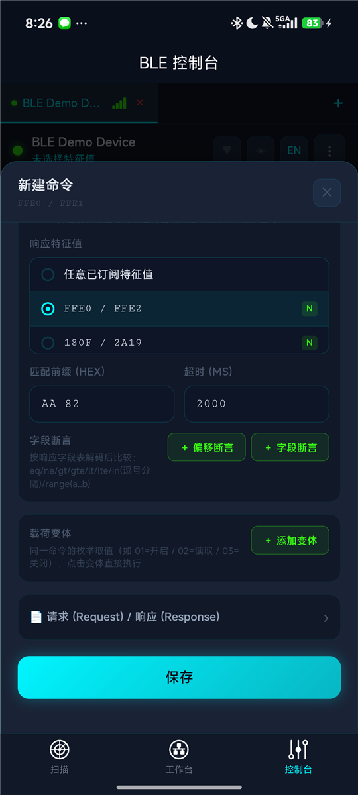
- Name / Operation ID (e.g.
device.getInfo) used for template merging and docs. - Target characteristic: discovered automatically when the editor opens right after connecting.
- Action: WRITE / WRITE NR / READ.
- Payload: HEX or ASCII with templates; live "Rendered" preview; token chips; fill from saved samples or collection examples.
- Verify expected response: waits and judges. Response characteristic (Notify enabled automatically), HEX prefix, timeout.
- Field assertions: offset assertion (bytes at offset equal HEX) or field assertion (decoded via the response field table, see section 8).
- Payload variants: enum values shown as chips; tap to run; the runner can expand them.
- Doc fields: request / response frame structure, examples, field tables, mock rule.
6.3 Run and judge
- ▶ runs; tapping the card fills the send area; long-press opens the menu.
- Results: PASS, FAIL (assertion), timeout, error, sent (no expectation).
- Run history is persisted per device and exported in SESSION_LOG.md.
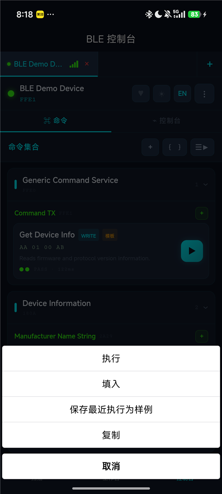
6.4 Variables and environment
The { } button opens the variables sheet: collection variables (exported with the collection) and device overrides (local, higher priority), plus the current {{seq}} with a reset button.
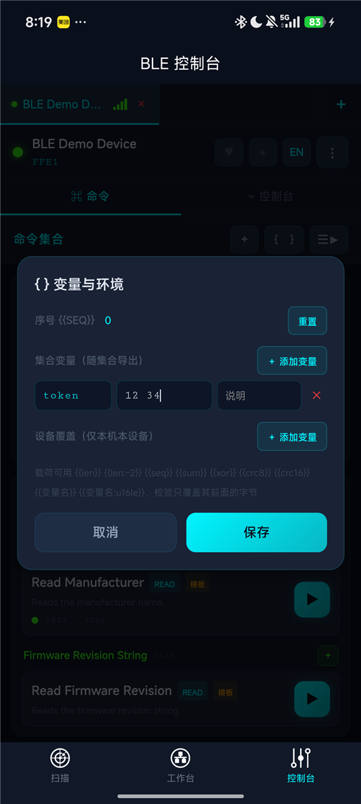
6.5 Runner
☰▶ enters selection mode; "Run N". ⚙ opens options: step delay, loops, stop on fail, expand variants. The report lists TX / RX / RTT / result per step with totals and average RTT.
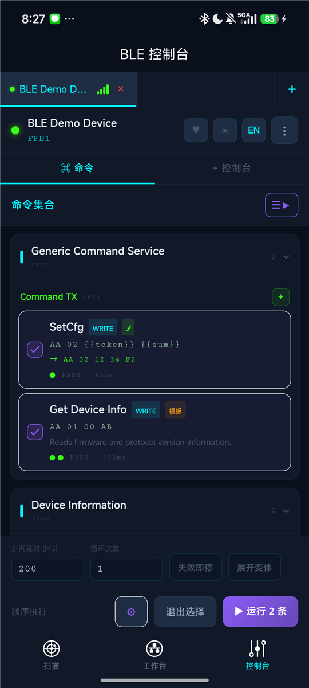
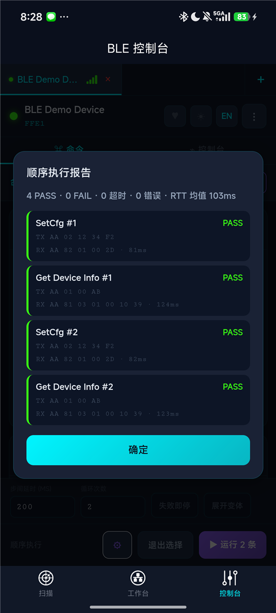
6.6 Examples
- Long-press a command → "Save last run as example" stores the request/response pair.
- Long-press a TX log → "Save as paired example" auto-matches the response within 2 s.
- Examples live in the collection and feed the editor, the exported docs and the mock device rules.
7. Payload templates and variables
A payload is a HEX string with {{...}} tokens. Rendering goes left to right; checksum tokens cover only the bytes before them, so put them last.
| Token | Meaning | Example |
|---|---|---|
{{len}} | total frame length, 1 byte | AA 01 {{len}} {{sum}} → AA 01 04 AF |
{{len:-2}} / {{len:+1}} | length plus a constant | |
{{len:u16le}} / {{len:-2:u16be}} | 2-byte little / big endian | |
{{seq}} / {{seq:u16le}} | sequence number, advances after each send that uses it | |
{{sum}} / {{sum:1}} | sum low 8 bits; :1 starts at offset 1 | |
{{xor}} / {{xor:1}} | XOR checksum | |
{{crc8}} | CRC-8 (poly 0x07, init 0x00) | |
{{crc16}} / {{crc16:0:be}} | CRC-16/MODBUS, little endian by default | |
{{crc16ccitt}} | CRC-16/CCITT-FALSE, big endian | |
{{name}} | variable holding HEX bytes | token = 12 34 |
{{name:u16le}} / {{name:ascii}} | typed variable: decimal / 0x hex / text | addr = 258 → 02 01 |
{{name:4}} | fixed length, zero padded |
ASCII mode only substitutes {{variable}} text. Device overrides win over collection variables.
8. Field types and assertions
The "type" column accepts real types, from the picker or typed; free text such as uint8, u16 LE, int16BE, float, string, utf-8, hex is normalized.
| Type | Meaning |
|---|---|
u8 i8 | 8-bit unsigned / signed |
u16le u16be i16le i16be | 16-bit little / big endian |
u24le u24be u32le u32be i32le i32be | 24 / 32-bit |
f32le f32be | IEEE 754 single |
bool | non-zero is true |
bitmask | shown in binary |
bcd | BCD digits |
bytes | raw bytes (HEX) |
ascii utf8 | text; length n means to the end of the frame |
The same types drive RX decoding, variable / variant encoding and assertions.
Field assertions pick a field from the response table and compare with == != > >= < <= in (comma list) or range (a..b). Numbers may be decimal or 0x hex; text / byte fields support == != in. Failures report the decoded value, e.g. field fwMajor=0: expect >= 1.
9. Workspace and Debug Pack

- Device card: RSSI, MTU, go to debug, history, disconnect; expanded: RSSI history chart, MTU negotiation, service tree.
- Service tree: property badges; names, direction, value format and operation counts from built-in templates or collection annotations; ✎ edits service / endpoint docs including operations.
- Collection chip: the collection resolved for this device; tap to open Collections & Plugins, copy JSON, or unbind.
Export Debug Pack
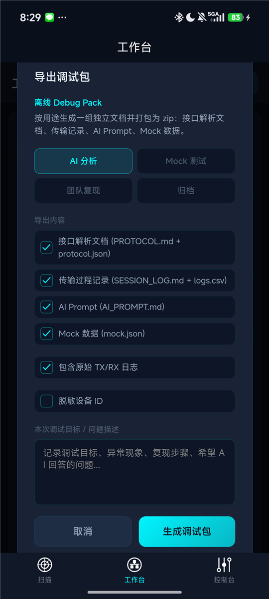
Pick a purpose (AI analysis / mock test / team replay / archive), the documents to include, raw logs, device ID redaction, and a note; the app writes a zip and opens the system share sheet.
| File | Content |
|---|---|
README.md | index |
PROTOCOL.md / protocol.json | services, characteristics, operations, field tables, variables, examples |
collection.json | the collection; importable back into the app |
SESSION_LOG.md / logs.csv | session summary, heartbeat stats, per-endpoint traffic, operation runs, timeline |
AI_PROMPT.md | context and output expectations for an AI, including the collection schema and template syntax |
mock.json | mock seed: variables, examples, and the same rules the in-app mock device uses |
AI round trip: give the zip to an AI, ask it to complete collection.json (names, field tables, operations, variables), then import it in Collections & Plugins, merging into the existing collection with "keep local".
10. Protocol collections
10.1 Concepts
- Fingerprint: a set of service UUIDs; a device matches when it exposes all of them (subset match); the highest score wins. An optional name rule (substring or
/regex/) narrows it. - Binding: an explicitly bound device always wins. The first annotation or command on a device creates and binds a collection automatically.
- Topology snapshot: services / characteristics / properties seen on the device, used by docs and mock.
- Content: service and characteristic annotations, operations, variables, examples.
10.2 Collections & Plugins page

- The bar shows the current device and its matched collection.
- Cards: name, source (mine / imported / built-in), matched / bound badges, stats, fingerprint chips, name rule.
- Tap a card for the detail page; "⋯" or long-press opens actions: copy JSON, share JSON file, edit info, bind / unbind current device, connect as mock device, duplicate as editable, delete.
- The lower half manages JS parser plugins.
10.3 Import
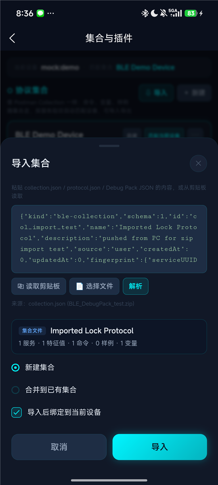
- Sources: paste, clipboard, choose file (H5 and Android;
.jsonor a Debug Pack.zip, from which collection.json is picked automatically, then protocol.json). - Formats: collection.json, protocol.json (0.1 / 0.2 / 0.3), Debug Pack JSON, legacy annotations.
- After parsing, choose new collection or merge into existing with "keep local (fill blanks)" or "overwrite", and optionally bind the current device.
10.4 Collection detail
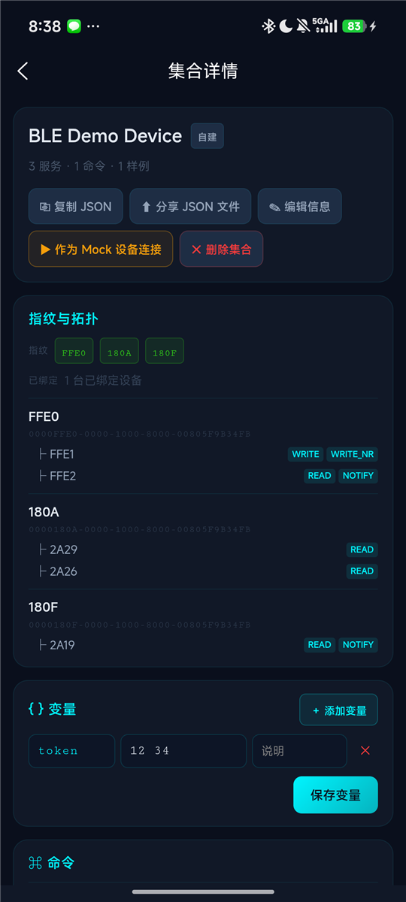
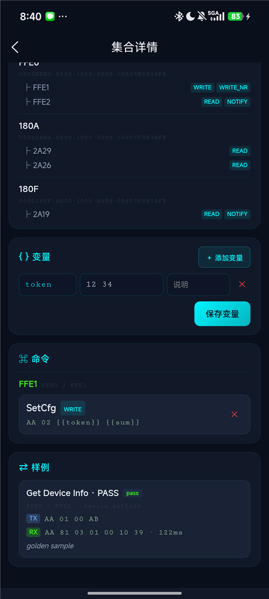
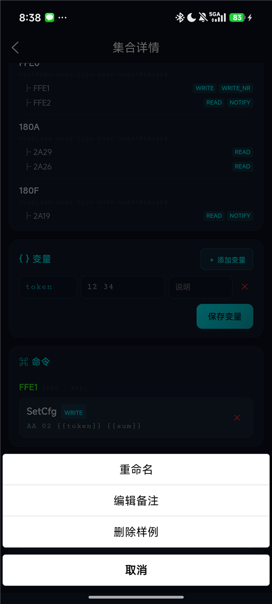
- Variables edited in place.
- Operations: tap to edit (written straight back to the collection), ✕ to delete.
- Examples: tap to rename, edit note, delete.
11. Mock mode
Enable "Demo / Mock mode" in Settings, or tap "Connect demo device" on the scan page.
- Demo device
BLE Demo Device: Generic Command Service (FFE1 write, FFE2 notify), Device Information, Battery. Rules:AA 01…returns device info,AA 02…a config ack,AA 03…a reboot ack, any otherAA…a NACK; an event frame every 5 s once FFE2 is subscribed; battery drops 1% every 10 s when subscribed. - Collection mock devices: every collection with a topology snapshot becomes
<name> (Mock). Rules come from operations with a response example (template payloads match on the first two bytes), paired examples (matched on the request, delay = example RTT),request: NONEinterfaces whose mock rule saysevery Ns(periodic notify), and READ operations' response examples (readable values). - Replies to unsubscribed characteristics are stored as readable values.
- When real Bluetooth is unavailable (H5, no permission) a virtual scan lists only mock devices.
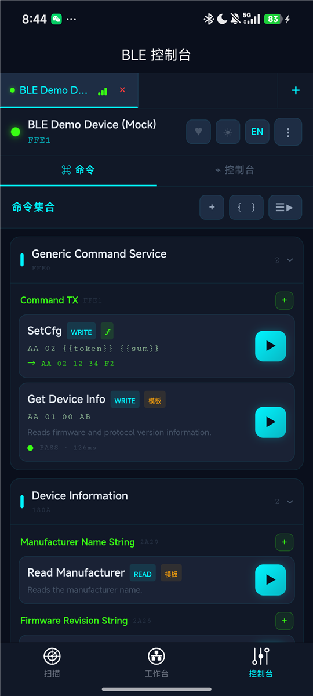
12. Heartbeat test and transfer history
- Heartbeat: ♥ in the console. Configure the target, a protocol-compliant payload, interval, write mode and optional response verification. Live sent / acked / missed / loss, RTT stats and trend, consecutive-miss warning; entries go to the log with a filter.
- Transfer history: every connection is recorded (logs, stats, RSSI range, MTU, end reason, heartbeat stats) grouped by device; view the timeline, export a single-session SESSION_LOG.md, delete.
13. Settings
Theme (dark / light), language (中文 / English), Demo / Mock mode, About (version from manifest).
14. FAQ
A built-in template command only shows "sent"? Since 0.2.0 templates carry a default expectation; for your own commands enable "Verify expected response" in the editor.
Zip import says it cannot unzip? The WebView lacks DecompressionStream and native unzip failed; unzip on a computer and import the collection.json inside.
No "Choose file" on iOS? The iOS file picker is not wired yet; use paste or clipboard.
A second unit of the same product shows no commands? Collections match by service fingerprint, so identical devices share automatically. If the wrong collection matched, bind the right one to the device on the Collections page.
Descriptors / bonding? Not exposed by the uni-app BLE API.